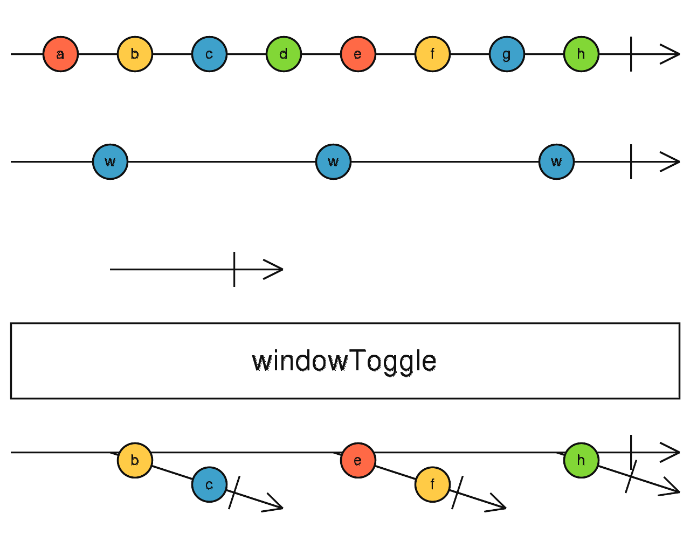

windowToggle
参数列表：
-
openings
Observable<any>
一个Observable，用于告诉operator应该开启一个新window
-
closingSelector
function(value: O): Observable
1个函数，接收 openings 发出的value,返回一个observable。返回的Observable每发出一个value,就会告诉operator当前window结束
返回值: Observable <Observable <T>>
珠宝图:

功能说明:
- windowToggle 订阅Source,当 openings发出一个值时，开启一个window,在此之后的Source的value会从这个window发出
- 一旦 closingSelector 有任何的值发出，当前window会被complete。
备注事项:
- windowToggle的好处是自己可以灵活控制窗口的开和关闭
点击不同按钮查看不同demo 代码效果